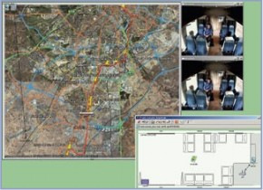

The purpose of the BOSS project was to design and develop a prototype for an efficient railway communication system. This system was aimed at supporting the high demands of an audio/video surveillance system in a rolling train from a control center on the wayside, and also addressing related issues, such as predictive maintenance. The system is based on WiMAX/HSUPA (outdoors, towards the control center) and WiFi (indoors) networks.

The functional architecture was developed into a full communication architecture as an OMNeT++ simulation model. The model was enriched throughout the project's lifetime by the modules and algorithms developed within the project's technical packages on radio communications, signaling, adaptation to impairments, efficient multimedia compression, and abnormal events detection.
"The OMNeT++ simulator was a key element to ensure the first validation of the system before prototyping, the establishment of initial working settings for the demonstration phase, and the measurement and assessment of techniques that will not be realistically implantable in the BOSS demonstrator," they write.
The BOSS consortium consists of THALES Communications France, Alstom-Transport, SNCF, INRETS, UPMC (France), UCL, BARCO-SILEX (Belgium), TELEFONICA I+D, Arteixo-Telecom, INECO (Spain), BME, E-GROUP (Hungary).
Read the full article in the November 2008 issue of Celtic News (pdf).
A video demonstration of the BOSS project (unfortunately without the simulation) can be viewed here.